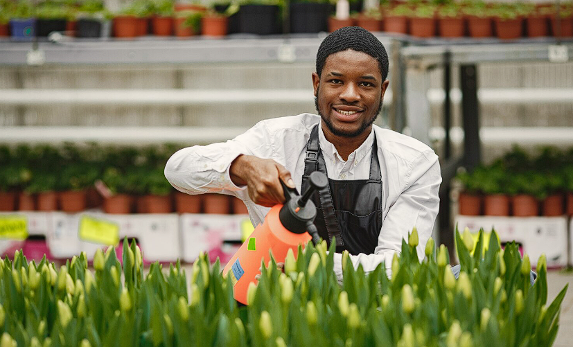

"
The SSF Trade Academy gave me more than skills — it gave me dignity. I now run a team of eight and have secured contracts I never dreamed possible.
Every figure here represents a life changed, a career launched, a family lifted. Here is what we have built together since 2024.
Our work directly contributes to six United Nations Sustainable Development Goals.
The SSF Trade Academy gave me more than skills — it gave me dignity. I now run a team of eight and have secured contracts I never dreamed possible.
I was the first in my family to attend university abroad. The Global Education Pathways programme made it possible — application support, funding guidance, everything.

The Youth Entrepreneur Fund believed in my agri-tech idea when no bank would. Three years on, we're serving 200+ farmers and have closed our first investment round.
Our team visited the Sunday Stephen Mirian Orphanage Home in Lagos, bringing food items, essentials, and moments of joy to the children there. This is what our work looks like on the ground.
These visits are made possible entirely by the generosity of our donors and volunteers.
Help us reach more children across Nigeria.
From surprising young men in our care with new jerseys and a birthday cake, to putting food packages directly into the hands of mothers in the community — this is another day of the Feed A Friend Initiative in action.
Every jersey, every food package, every kind word — made possible by people like you.
Help us reach more families across Nigeria.
We are proud to work alongside organisations that share our commitment to youth empowerment.